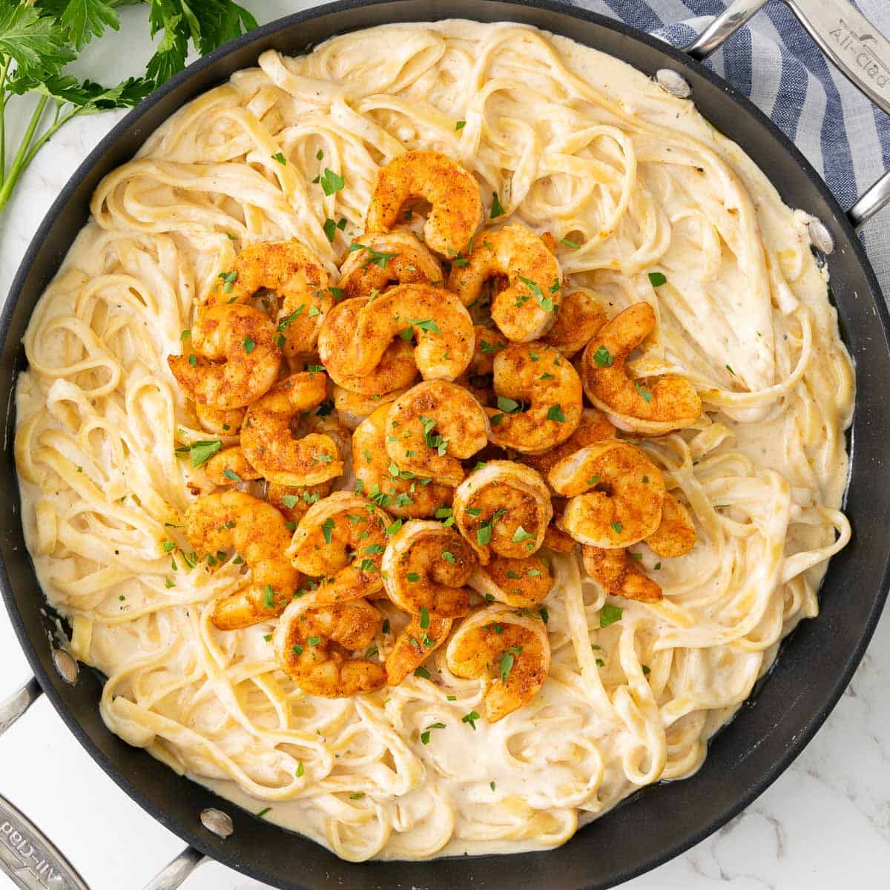

Home
Cajun Shrimp Fettucine

Description
This dish is honestly one of my TOP 3 favorite dishes. On my birthday, I always go to this resturant called
Dragos, and order this dish.
Honestly, I don't have enough words to describe how GOOD this dish is. All I can say is: if you are ever in
New Orleans, go to Dragos and order this dish. Also, a dozen charboiled oysters as an appetizer. Trust me, you'll be satisfied.
This dish takes the classic Fettucine Alfredo, and evolves it into a New Orleans staple. Instead of the common combination of chicken fettucine,
the chicken is replaced with shrimp flavored with local cajun seasonings. Creamy,delicious, and it tastes like home. Let's dig in!
Ingredients
- 1 lb raw large shrimp
- ¾ of a 16oz pkg of Fettucine pasta (cooked)
- 2 tsp Cajun seasoning
- 1 tsp onion powder
- 1 tsp garlic powder
- 1 tsp Herbes de Provence
- 1 tsp paprika
- ½ tsp lemon pepper
- 1 Tbsp olive oil
- 2 Tbsp butter
- 1 tsp minced garlic
- ⅓ white wine (or chicken broth)
- 2 cups heavy whipping cream
- ⅔ cup grated Parmesan cheese
- Salt and pepper to taste
- Fresh parsley to garnish
Steps
- Season the shrimp with the onion powder, garlic powder, Herbes de Provence or Italian seasoning, lemon pepper, paprika,
and 1 tsp of the Cajun seasoning.
- In a pan, heat the olive oil over medium high heat
- Add in the shrimp and cook until they are pink. (Do not over cook.)
- Remove the shrimp and tint with foil to keep warm
- Once it melts , add in the garlic and sauté for 30 secs
- Pour in the wine and stir to deglaze the pan.
- After the wine reduces, pour in the heavy cream and bring it to simmer.
- Add in the Parmesan cheese and the other tsp of Cajun seasoning
- Turn the heat to low and allow the sauce to simmer for 5-6 mins.
- Taste and adjust seasoning as needed
- Add the cooked pasta and shrimp (optional) to the sauce and toss well to coat.
- Garnish with fresh parsley and enjoy!